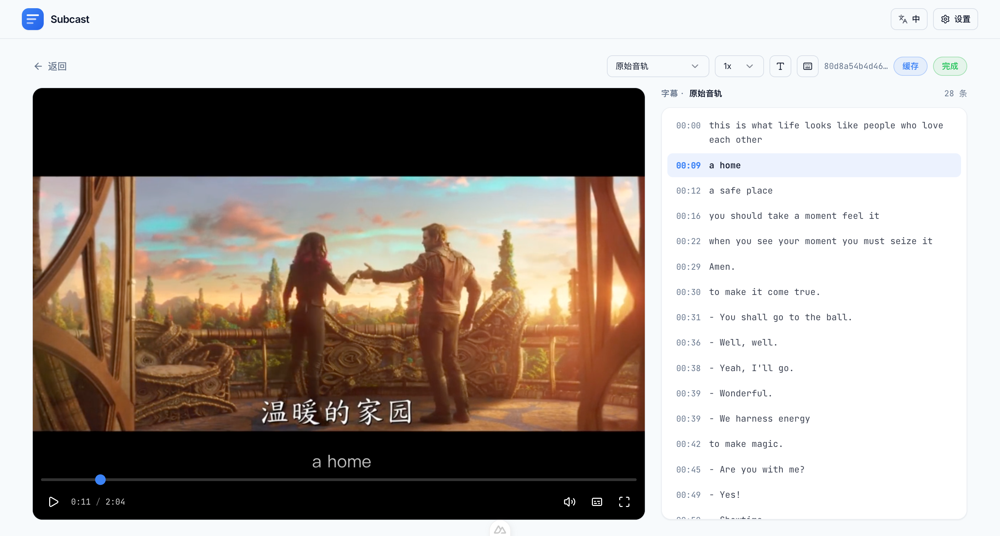
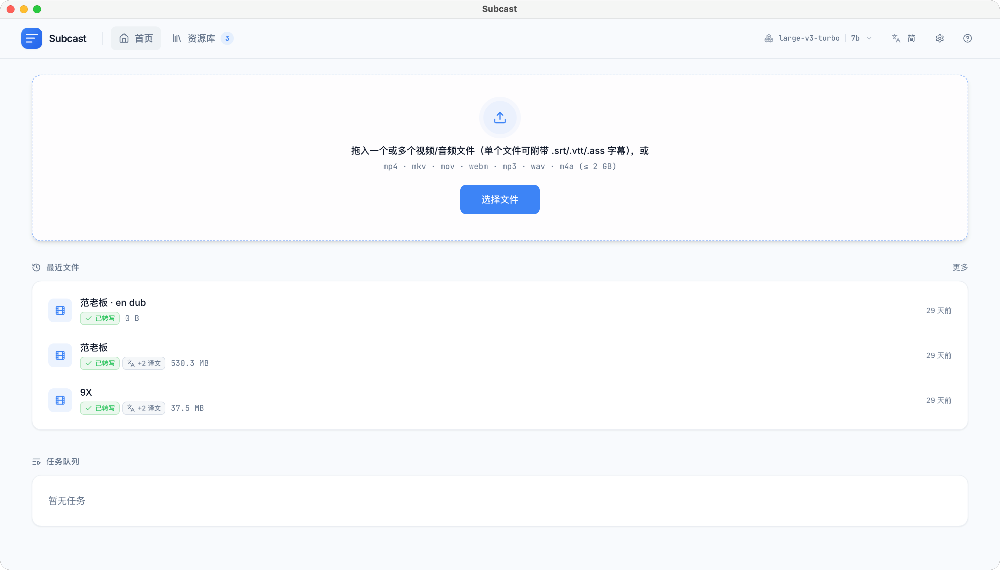
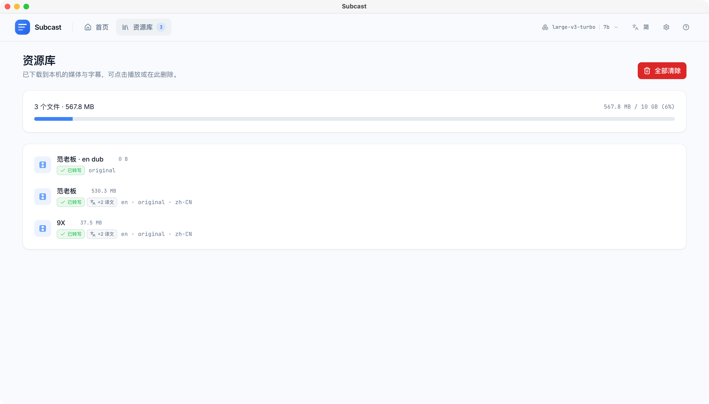
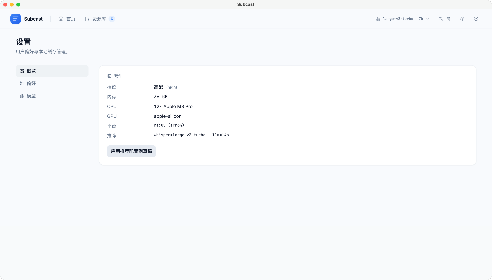
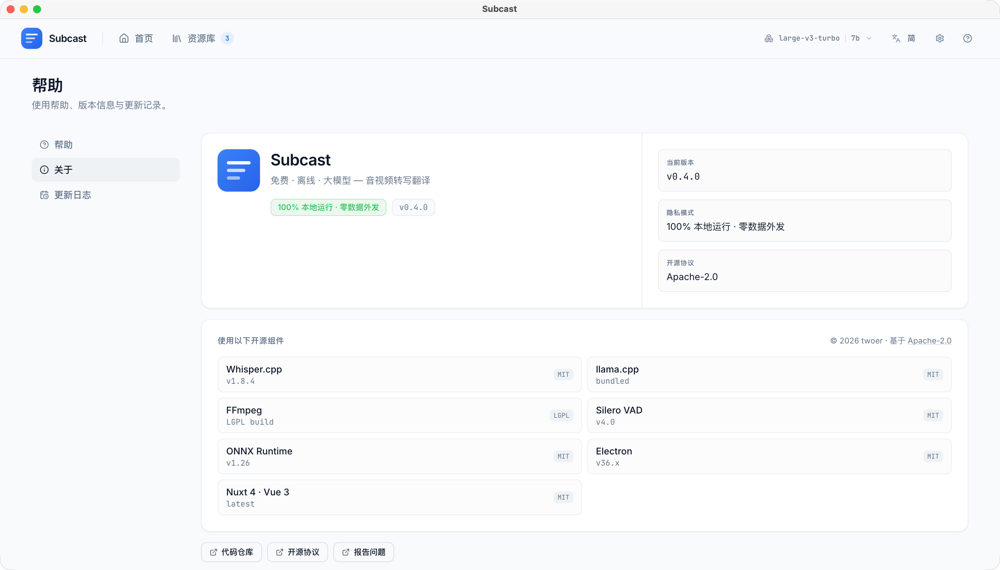

免费 · 离线 · 隐私优先
本地 Whisper 转写 + 本地 LLM 翻译 / 摘要，数据不离开你的机器
安装包内置 Whisper base 转写模型 · 装完即用 · Apache-2.0 开源

从转写到导出，一条龙，全部本地
所有数据与推理都在本地完成。敏感音视频不上传任何服务器。
不依赖任何云端 API。下载模型后，零费用、零订阅。
转写过程中即可开始观看，无需等整段跑完。断点续传。
原文 + 任意目标语言，播放器内实时切换，已缓存语言秒切。
一键生成本地 LLM 流式摘要与可点击的章节标记。
Silero VAD 预分段，只处理真正的人声。长视频提速 30–50%。
内联音频波形可视化，点击或拖动精准定位到任意时刻。
单语 / 双语 / 多语字幕一键导出（VTT / SRT / TXT）。
播放器内常驻搜索框，匹配高亮，Enter 循环跳转。
从下载到看到字幕，不超过两分钟
从 GitHub Releases 下载 .dmg，拖入 Applications。
把视频或音频拖进窗口，本地 Whisper 自动开始转写。
选择目标语言翻译，或一键生成 AI 摘要。全部本地运行。




xattr -cr /Applications/Subcast.app，然后双击即可正常打开。